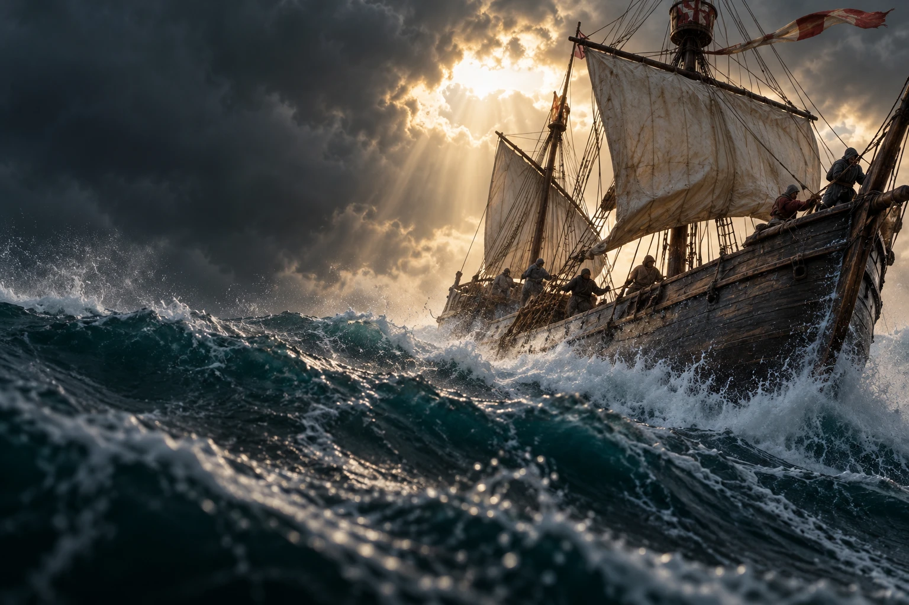
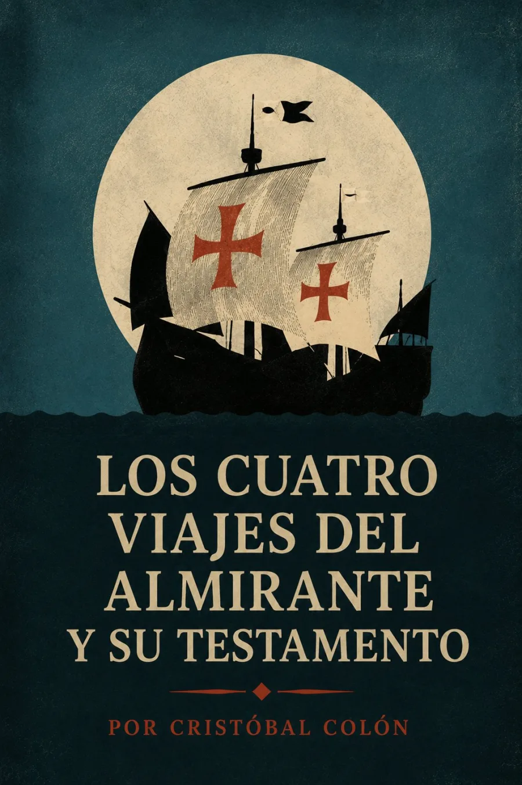

Audiolibros · Segunda Ola
Cristóbal Colón · Documentos: 1492–1506
Los cuatro viajes
del Almirantey su testamento
El mar no firma promesas.
Cuatro travesías. Un horizonte incierto.
Y la voluntad de dejarlo todo por escrito.

Escuchar el viaje y sus contradicciones.
Grabación próximamente
Volumen

Cuatro viajes, muchas voces del archivo
El océano ocupa el horizonte; la escritura intenta fijarlo. Este volumen reúne documentos de los viajes colombinos y su testamento. No se trata de cuatro diarios íntegros y equivalentes: el primer viaje se presenta en una relación compendiada por fray Bartolomé de las Casas; el segundo, en un memorial; el tercero y el cuarto, en cartas.
La misma página puede registrar una costa y reclamar el derecho a gobernarla.
La observación náutica convive con la búsqueda de riqueza, la apropiación territorial y la defensa de privilegios. Leer el conjunto como un archivo permite reconocer esas diferencias de voz y propósito. El testamento lleva la mirada del horizonte a la herencia: qué se conserva, qué se reclama y cómo se quiere ser recordado.
Cronología documental: 1492–1506; no equivale a una fecha única de publicación del volumen. La edición digital de la Biblioteca Virtual Miguel de Cervantes (2002) reproduce la décima edición de Espasa-Calpe (1991), con edición y prólogo de Ignacio B. Anzoátegui. Índice y documentos. La imagen representa el peligro de la navegación, sin atribuirlo a un día concreto.
La lectura
Lectura completa
Grabación próximamente. La lectura de la obra estará disponible aquí. Las grabaciones se incorporarán cuando estén preparadas.
Valoración

Excelente